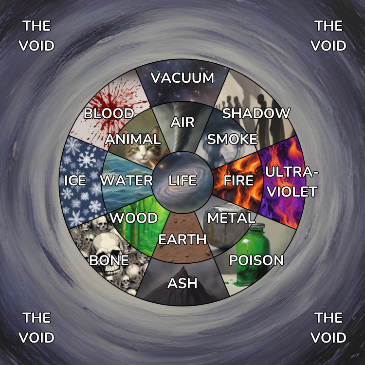

Tymely News
Special Feature: On Magical Elements

A collage of AI generated images representing the various elements, laid out as a cohesive chart of the elements.
All users of magic in the Ashen Blades series use a system of metaphors for classifying magic in to manageable categories and these categories are not always the same, varying by culture.
Witches use a system based on four basic material elements, including Air, Fire, Earth and Water, as well as two basic elements representing polar opposite energies: Life and The Void. Various other elements formed by combining the basic elements together.
During book one, the witches call Life 'Spirit', but Spirit is actually a sub-element of Life magic, a conclusion Verda Bagley arrives at during book two.
Material Elements
The four material elements represent all physical materials in the known universe, with the exception of difficult to classify materials, such as dark matter, which science doesn't even understand.
Mastery over any material element allows shaping it and levitating it, with magic that mimics telekinesis.
Air
The air, representing not just the breathable gasses, but all gasses, to a certain extent, as well as air currents and weather.
Air is a difficult element to master and witches that bear a natural talent with it can be quite dangerous when they lose control of their emotions, leading to shifts in weather outdoors, or poltergeist-like activity, indoors.
Isabel Grant and Verda Bagley are witches that wield Air magic.
Fire
Fire represents the more energetic elements of nature, but isn't considered a destructive influence, because the materials produced by the action of Fire are still useful to living processes.
Fire includes the fourth state of matter, plasma, and nuclear reactions.
Fire is one of the easiest elements to learn and untrained witches with a talent for it are unfairly feared, though in truth, Fire magic is actually quite safe, following guidelines similar to the real thing: it takes effort to start a fire and a large lapse in judgment for a controlled flame to get out of control.
Annmarie Nosset and her daughter, Little Miss Secret, are witches that wield exceptionally hot Fire magic.
Earth
Earth represents the ground we walk on and the processes that take place within it, including tectonic forces and volcanism (though fire is also involved in that). Hurling rocks with this form of magic is relatively easy, but shaping dirt and stone takes time and dedication to master.
Earth is relatively easy to get started with, because clay can easily be used for training exercises. However, witches with a natural talent for Earth can sometimes become quite terrifying to deal with, if their emotions get out of control, leading to earthquakes and other upheavals of the earth.
To a lesser extent, Earth also represents all solid matter.
Isabel Grant is a witch that uses Earth magic. In book two, Simmons demonstrates some ability to use Earth magic.
Water
Water is absolutely essential for all known living processes and users of Water magic can be exceptionally dangerous, because Water can readily be shaped into cutting and impaling attacks.
Water magic is quite difficult to master and rarely goes out of control, because wielding it requires supreme level of control or the water will simply go back to doing what it normally does.
Verda Bagley is a witch that uses Water magic.
Energetic Elements
Life
Life is what binds all the other elements together, allowing them to combine in infinite complexity. It's also absolutely essential to all living processes.
There are many sub-classes of Life magic and it takes in many things that don't readily fit in other elements, including curses and counter-curses.
Paradoxically (see below, regarding The Void), demons use a sub-class of Life magic to infiltrate the minds and hearts of humans: Spirit magic. This allows them to arrive on Earth in spiritual form, whispering inside the minds of mankind, until they convince the human to taint their own soul with such a heavy burden of sin, the demon takes possession of both their soul and body.
Life is Verda Bagley's strongest element as a witch, making her an expert on curses, counter-curses and healing magic. In book two, she also demonstrates knowledge of what's largely considered the dark-side of Life magic: Necromancy, which may be a Void-touched off-shoot of Life magic, though this is debatable, because Necromancy can be used to return a dead thing to life.
The Void
The Void represents the forces of death and entropy. It's ever hungry to consume the multiverse, breaking it all back down until there's nothing left but The Void. Void magic readily combines with the material elements, transforming them into mocking parodies of themselves.
The only known direct use of Void magic is for spatial manipulation, including teleportation and the formation of a pocket dimension.
For teleportation, it normally has to be paired with another element, to form a doorway. Form example, Little Miss Secret uses Void magic combined with Shadow magic to teleport from shadow to shadow, a spell known as shadow-stepping. How this works is particularly strange: the Void magic user simply steps out of the entire multiverse, and steps into The Void. From there, they then step back into the multiverse, at the place of their choosing. Hypothetically, it might be possible to travel through time the same way.
Demons all tap Void magic to one extent or another.
Little Miss Secret uses Void magic, which she got from her demonic ancestry. Her Top Hat contains a pocket dimension that stores most of the things she owns.
Secondary Material Elements
The secondary material elements are formed by combining adjacent material elements. These can be neatly categorized as scientific and natural elements.
Smoke
Smoke is the combination of Air and Fire, usually coming into being when Wood is burned. While it has its place in the natural world, its considered a scientific element, having been extensively, shaped, controlled and shackled by mankind.
Little Miss Secret makes extensive use of Smoke magic mixed with Shadow magic to conjure the weapons stored in her hat into her hands.
Metal
Metal is the strongest of the scientific elements, because most metals aren't found in their pure form in nature, requiring Fire to forge Earth into something different from the two.
In book two, Simmons is stated to have been studying Metal magic.
Wood
Wood magic is difficult to master, but gives power to manipulate plants in myriad ways, accelerating growth or granting power to move to these normally slow forms of life.
Wood is one of Verda Bagley's strongest elements.
Animal
Animal magic allows manipulating animal life of all kinds, including humans.
Most demons use some measure of Animal magic, because their first form is almost always that of an animal.
Mashu'ra uses this form of magic to transform the body of Simmons, giving him great strength and durability.
In book two, Verda Bagley demonstrates some very minor Animal magic, allowing herself to see in the dark, much like a cat.
Master Lagrow, the wizard that was Master of the Ashen Blades in book one, uses a very narrow class of Animal magic combined with Life magic to enact curse-like spells on living beings, fooling them into believing he's their friend and ally.
Void-Touched Elements
The Void-touched elements are all a combination of another element and The Void, leading that element closer to the end of all things.
Vacuum
Vacuum is the absence of Air, which can be quite damaging to unprotected living things.
Shadow
Shadow is Smoke that has lost its substance, leaving behind nothing but darkness that blots out the light.
Little Miss Secret makes extensive use of Shadow magic to conjure her weapons into her hands, in combination with her Smoke magic. She also combines it with Void magic, to teleport from shadow to shadow.
Ultraviolet
Ironically, combining Fire magic with the energy of the Void increases the power of the flame until its capable of consuming almost anything, producing a temperature so high, the flame glows in the ultraviolet spectrum.
Effectively, the ultraviolet flame has the endless hunger of the Void, seeking to burn all until there's nothing left.
Little Miss Secret learned to produce a UV flame just after seeing her mother use high-intensity blue flames, effectively combining her witch and demon powers into the most intense spell in her magic arsenal.
Poison
Derived from Metal and Void, poison represents anything that's toxic to animals, even including substances that are normally safe or even essential for life, but can be lethal if the dose is high enough, such as salt. Much of the toxins in the world are metals in one form or another, hence the close relationship with it.
This category of magic also includes any form of corrosive magic.
Ash
Ash is Earth that's been scorched so hot it loses all useful qualities, becoming inherently dangerous, choking out life. It takes time and the application of other elements to revitalize volcanic ash, but it can eventually become fertilizer.
Bone
Strangely, bone is the combination of Wood and Void. When all life leaves wood, the bark falls away and the bleached, dead wood starts to resembles bone.
Bone magic can only manipulate the skeletal structures of formerly living things, leading to such abominations as walking skeletons with no will of their own.
Ice
Water that loses most of its energy freezes and loses its life-giving qualities. Thus, ice is the combination of Water and Void. Ice magic is easy to master in snowy or arctic environments, but far less common in warmer climates.
Blood
Originally considered a form of Necromancy, but later categorized as a corruption of Animal magic by The Void, Blood magic allows the manipulation of living blood. It's one of the most lethal forms of magic, allowing human bodies to be torn apart from the inside-out, regardless of skill level.
Witches with a natural talent for blood magic are often surrounded by carnage worked by their own, out of control emotions and the more carnage they see, the more out of control their emotions become, until they accept their power or self-destruct as they internalize the realization they're responsible for all the deaths they've seen their power inflict on others.
Unfortunately, those that survive the trauma of such power coming to the surface usually become serial killers, thinking it gives them the right to be judge, jury and executioner.
Blood magic can be used to heal the body, but the malign uses far outweigh its benefits to society.
Whether it's just or not, Blood witches are feared and hunted by nearly all other witches, because they're too powerful to control and it's too easy for them to kill with an errant thought.
Additional Elements
This list is hardly exhaustive and there's a myriad of ways to combine the elements that aren't easy to display on a chart. For example, Steam magic is a combination of Fire and Water.
Other Elemental Systems
All of this is simply a useful set of metaphors to aid understanding. In addition to this system, demons also use their own systems of metaphors:
The most common system demons use relates everything to the various substances in the human body, including blood, bile, urine, bone, muscle, etc. That system sounds very messy and is very unappealing to non-demons. Demons, on the other hand, love it, because it suits their sick-minded nature.
The next most common approach relates the whole of creation to the seven deadly sins. Noble demons tend to favor this system, because it pays homage to the seven arch-demons that rule Hell.
Tags: ashen-blades